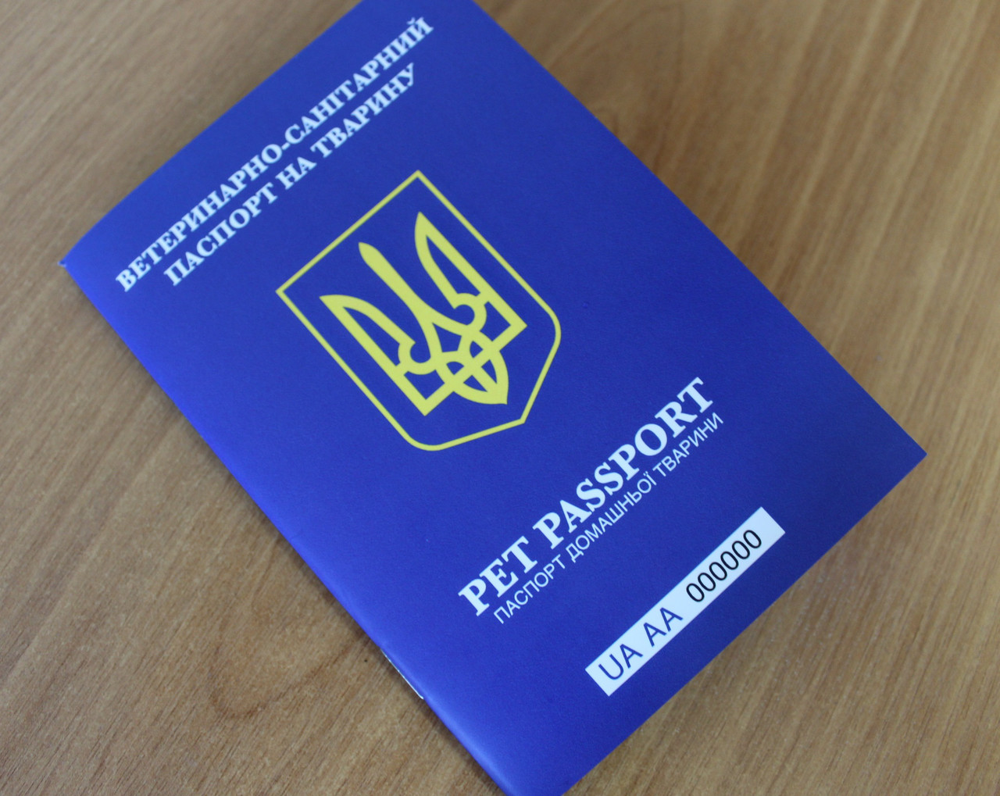
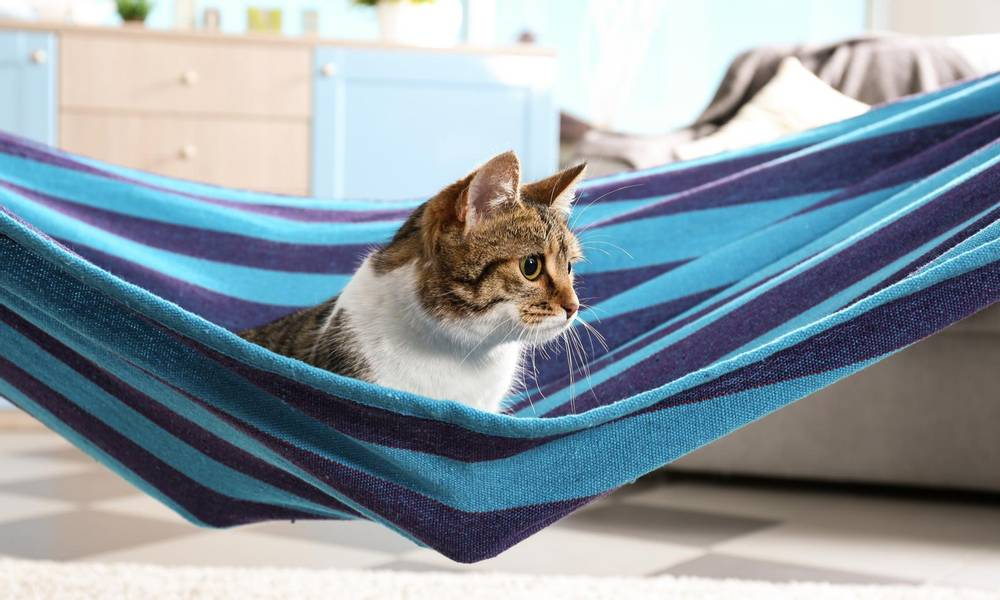
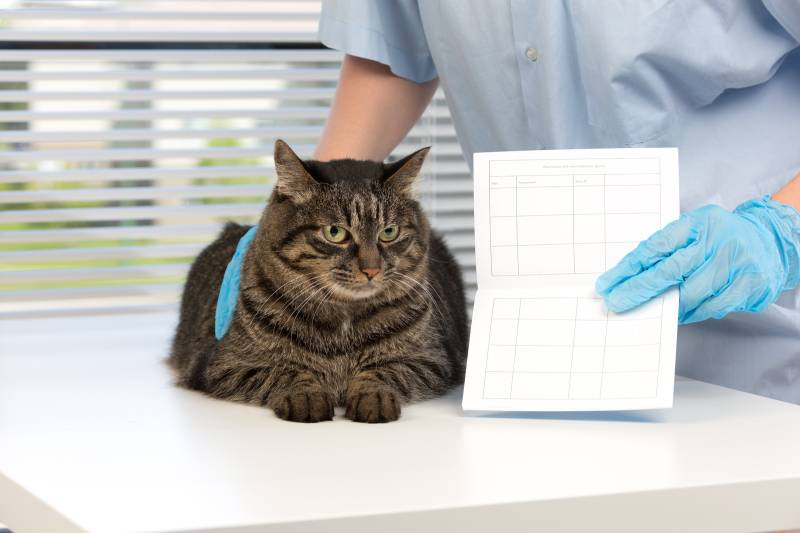

Ми створені для того, щоб розповідати вам про котиків.
Як оформити паспорт для тварин: все що потрібно знати

Паспорт для тварин є таким самим індефікатором як і паспорт для людини й має обов'язково
бути у кожного власника чотирилапих улюбленців. Тож далі ми розповідаємо навіщо потрібен
паспорт для тварин і як його отримати.
Навіщо потрібен паспорт для тварин
В першу чергу такі паспорти потрібні для ідентифікації та відслідковування ветеринарної історії
домашнього улюбленця. В паспорті міститься інформація про вакцинацію, чіпування, дати візиту
до ветеринара та відомості про перетин кордону тваринкою. Також, там зазначені: кличка
тварини, стать, дата народження, порода, колір шерсті або шкіри, особливості та
яскраво виражені відмінності тваринки.
Якщо при перетині кордону домашній улюбленець не матиме паспорта, то на митниці виникнуть проблеми
та навіть може бути накладений штраф й заборона в’їзду до тієї країни. Також, без паспорту
власник тварини не зможе оформити на неї страхування чи отримати певні послуги у
ветеринарних клініках.
Перед отриманням паспорта для тварин потрібно:

Документи необхідні для отримання паспорту для тварин:
Як отримати паспорт для тварин:
Як замінити паспорт для тварин
Термін дії паспорта для домашніх улюбленців – три роки з моменту останньої вакцинації від сказу.
Після, паспорт необхідно замінити. Вартість заміни паспорта – від 250 до 500 грн.
Замінити паспорт можна в будь-якій державній ветеринарній клініці, яка цим займається.

Для заміни паспорта потрібні такі документи:
Як відновити паспорт для тварин, якщо його було втрачено
Зверніться з усіма необхідними документами (перерахованими нижче)
до державної ветеринарної клініки, де є послуга оформлення паспорта.
Орієнтовна вартість послуги – від 100 до 300 грн.